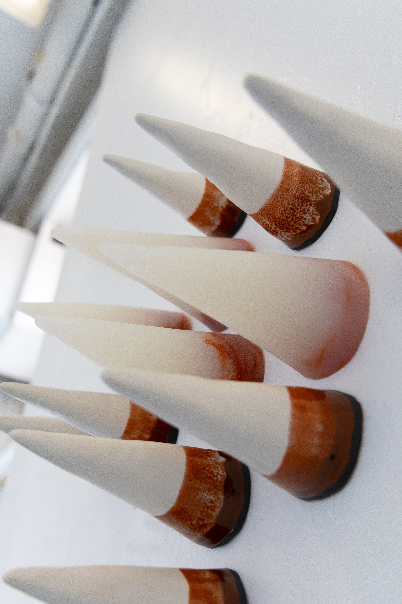
Hedgehog’s Dilemma
Ceramic, Silicone · 2025
Sculptural, material, and installation-based works exploring instability, resilience, and embodied negotiation.

Ceramic, Silicone · 2025
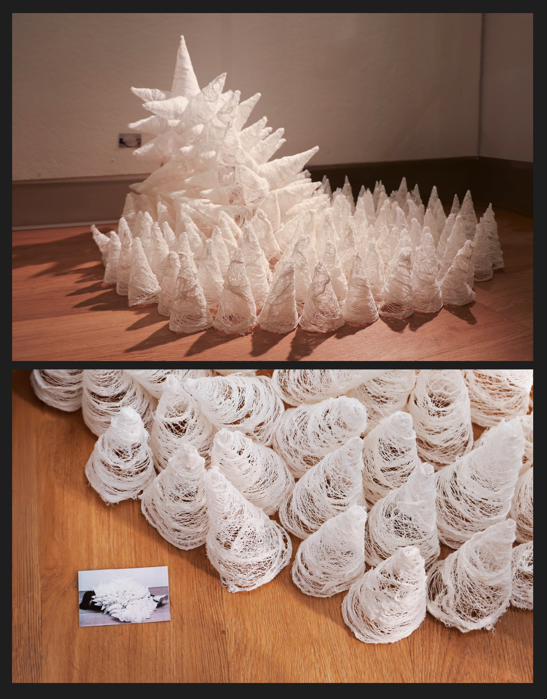
Medical Gauze · 2025
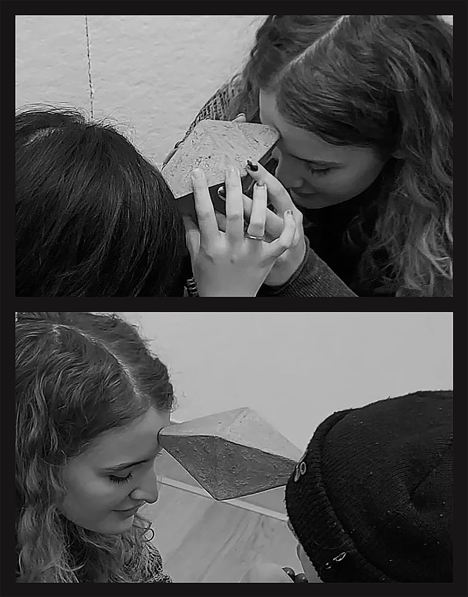
Ceramic · 2025

Ceramic · 2025
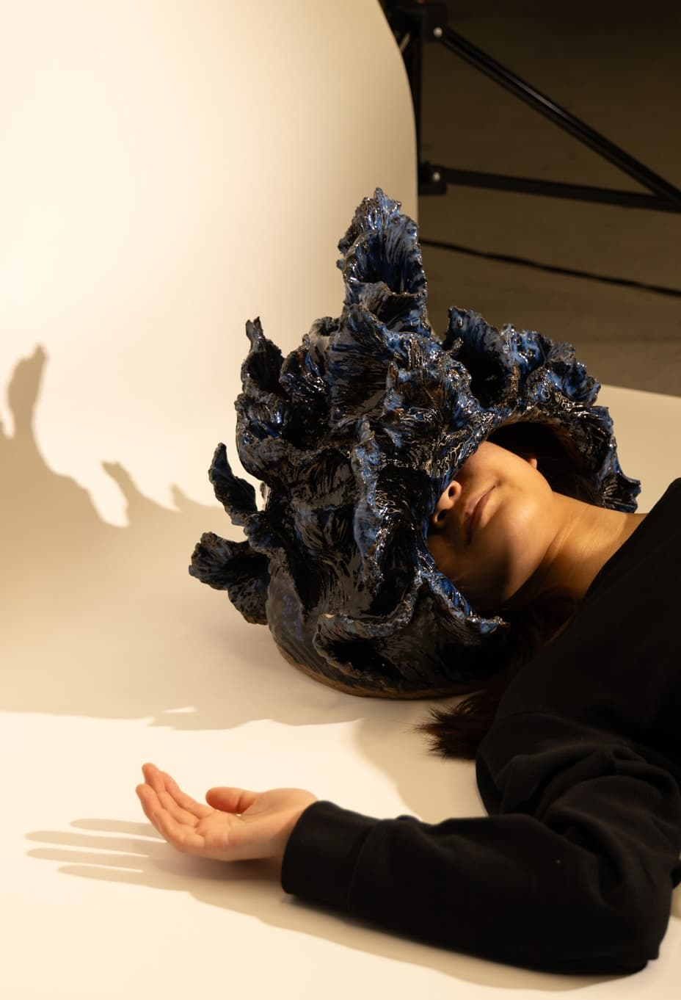
Ceramic · 2025

Ceramic, P5 JS · 2025
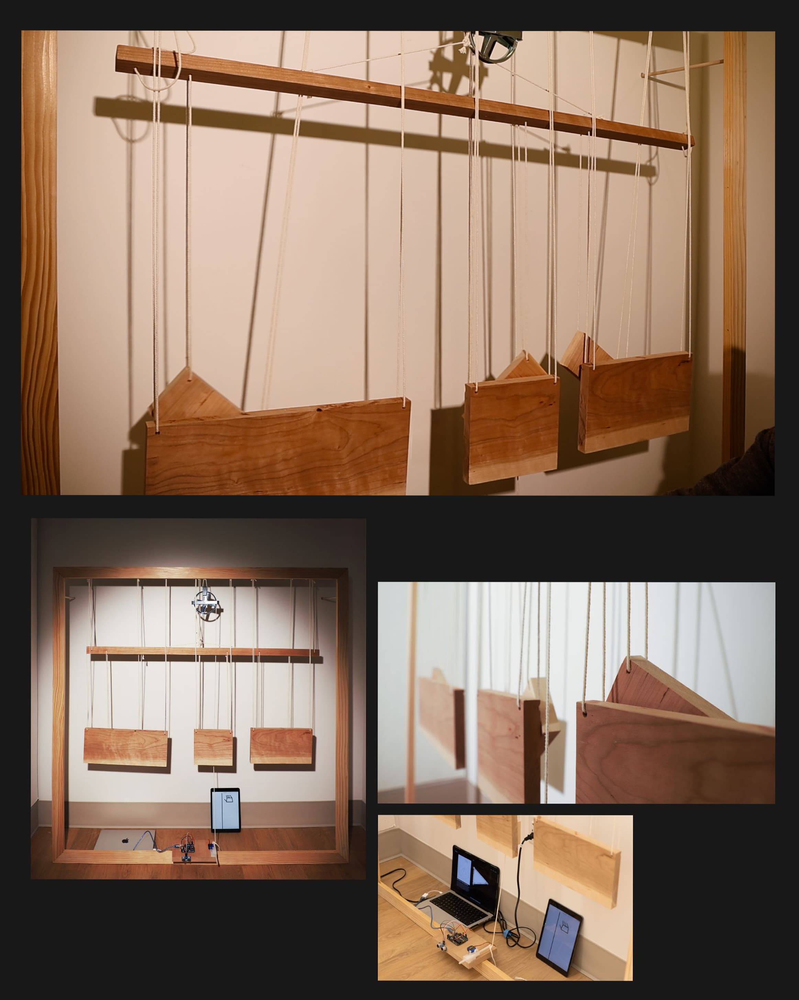
Cherry Wood, Pulley, Ultrasonic Sensor, P5 JS · 2025
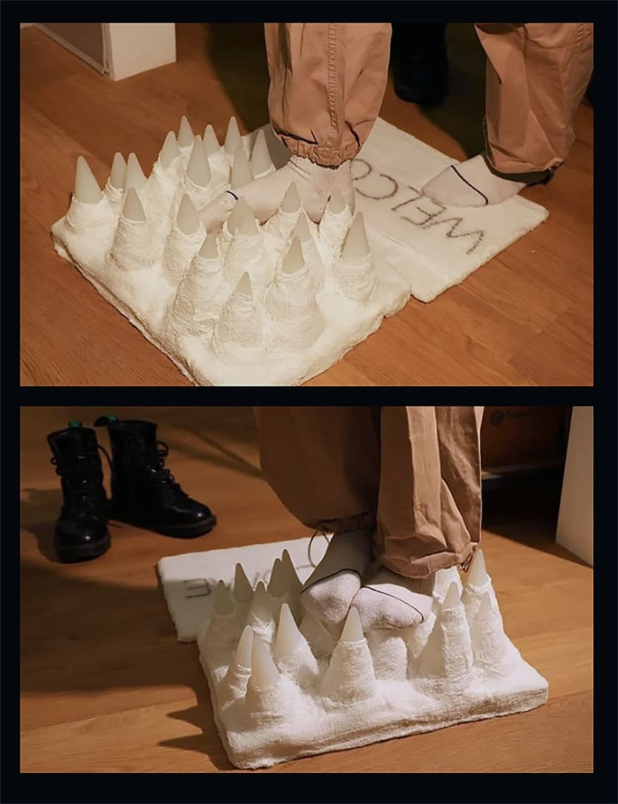
Medical Gauze, Silicone · 2025
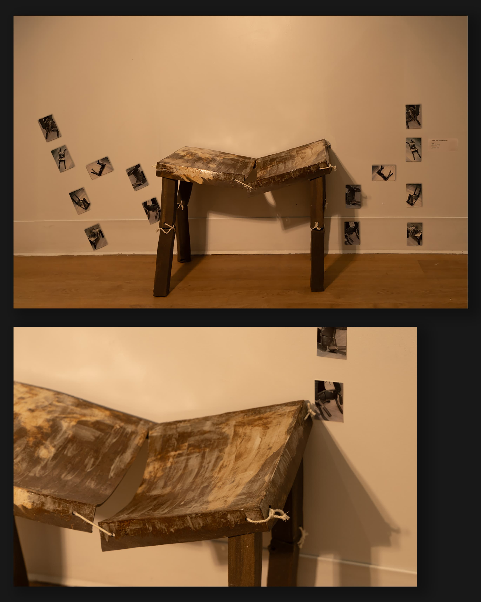
Ceramic, Zinc Photos · 2025
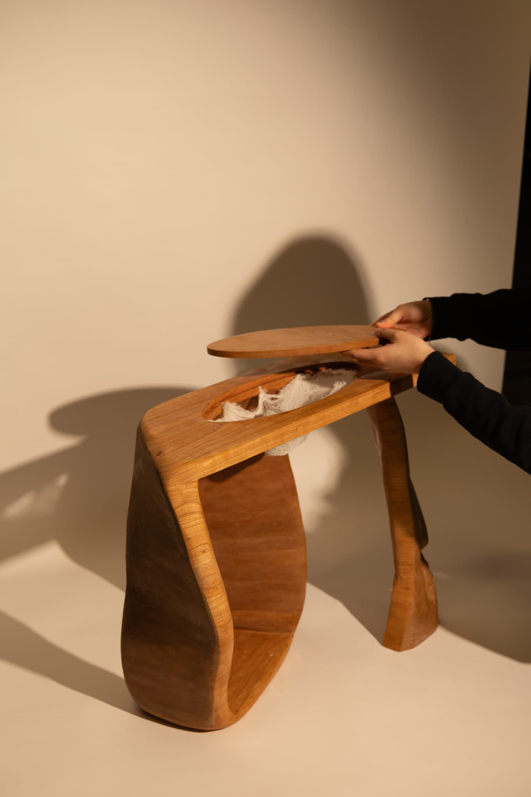
Cherry Wood, Gauze · 2025
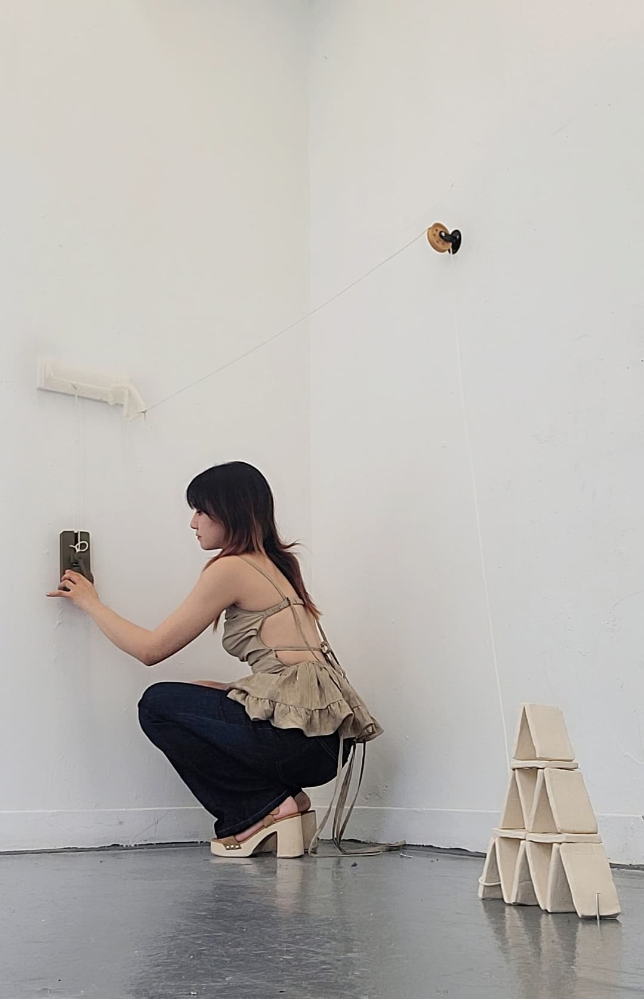
Ceramic, PLA, TPU · 2025
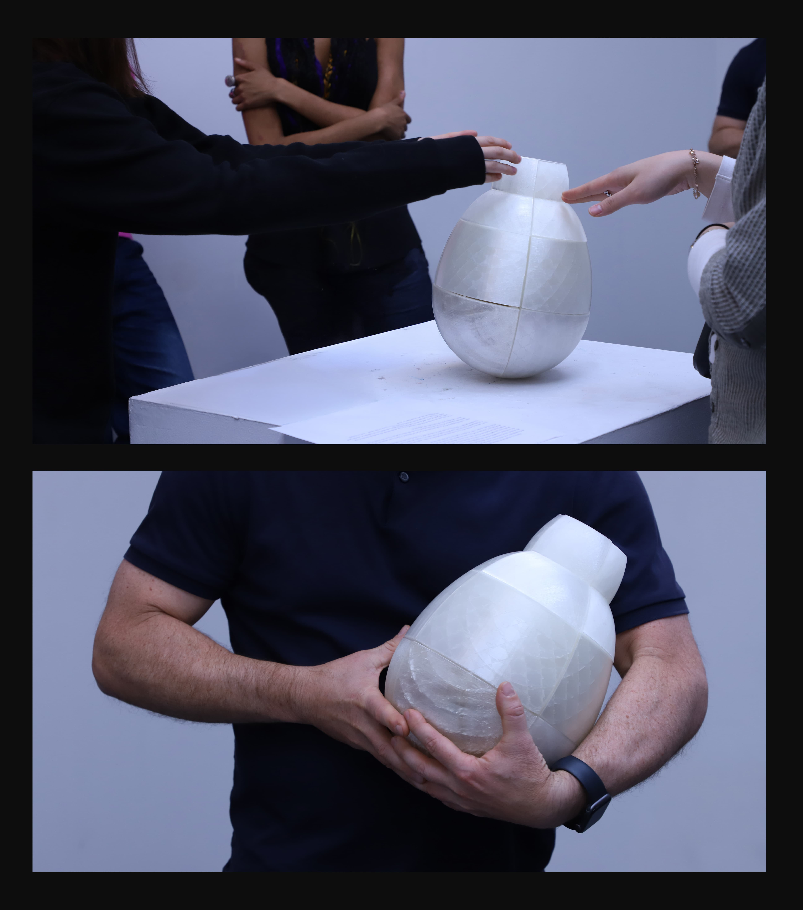
3D Printed PLA, Pebblestone · 2024
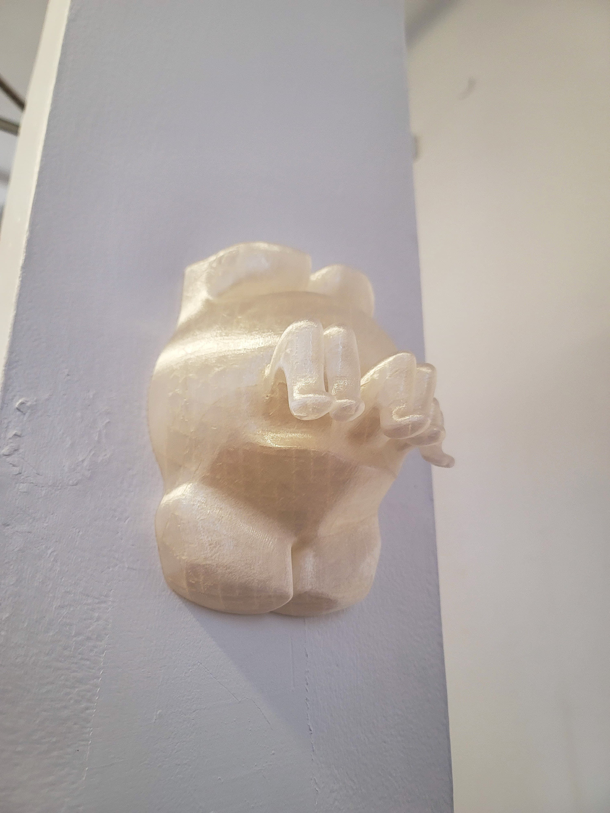
3D Printed PLA · 2024
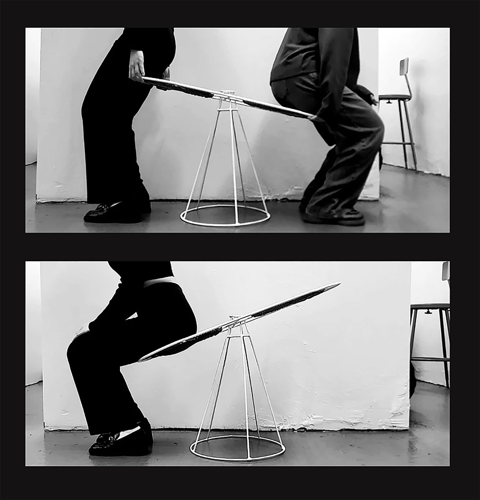
Metal, Leather · 2024
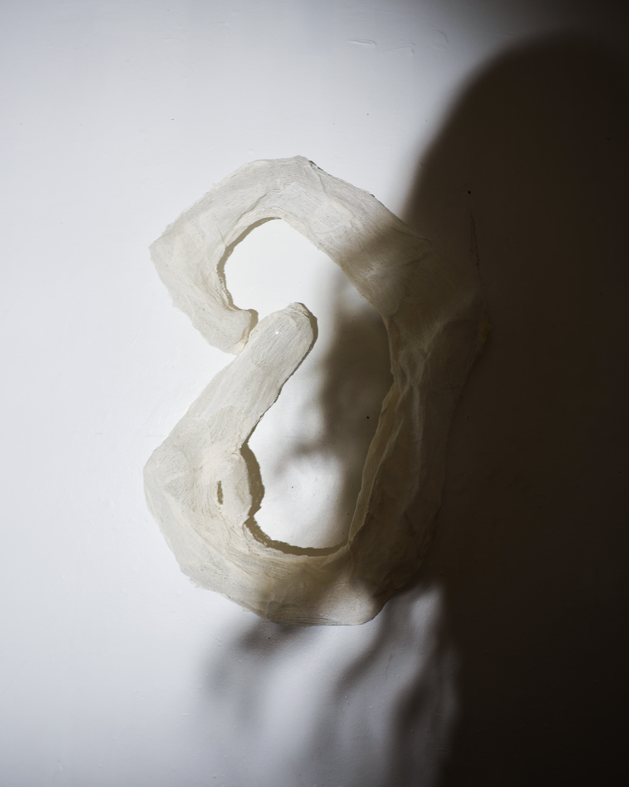
Medical Guaze · 2025

Ceramic, Python Flask · 2025